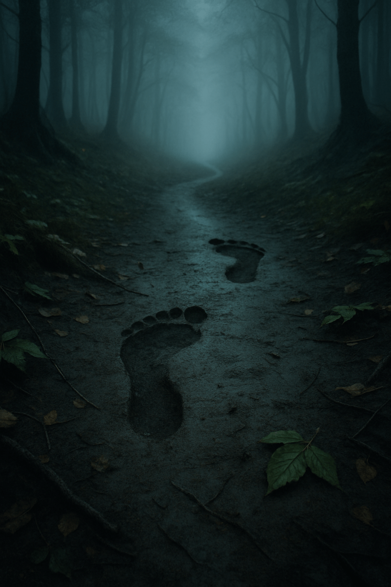
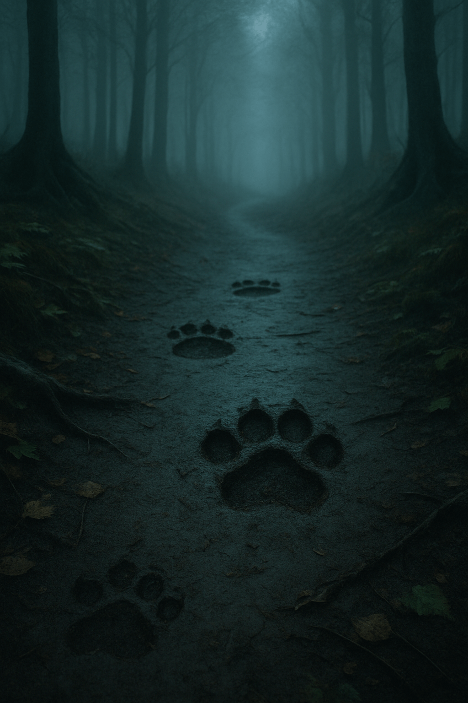

Portfolyo Sitesi
Geçide dalmadan önce toprağı yokluyorsun. Nemli zemin iki farklı hikâye taşıyor: Biri çıplak ayak izleri—yumuşak, tereddütlü ama kararlı; diğeri pençe—düzgün aralıklı, sanki ritmi var. Rüzgâr izlerin üzerine eğiliyor; hangisine kulak vereceksin?
Çıplak ayak izlerini takip et.👣

Pençe izlerini takip et.🐾
